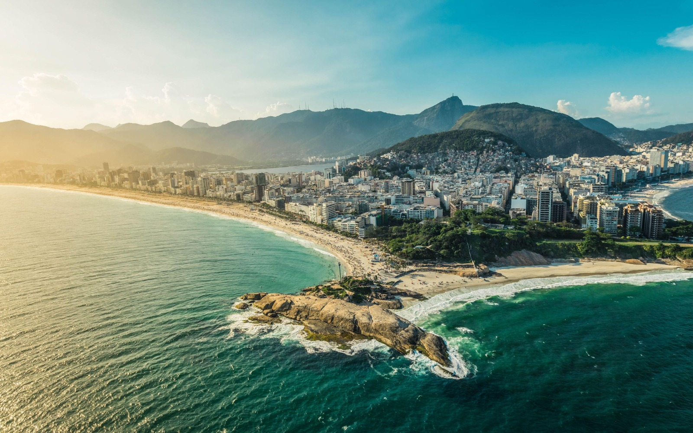
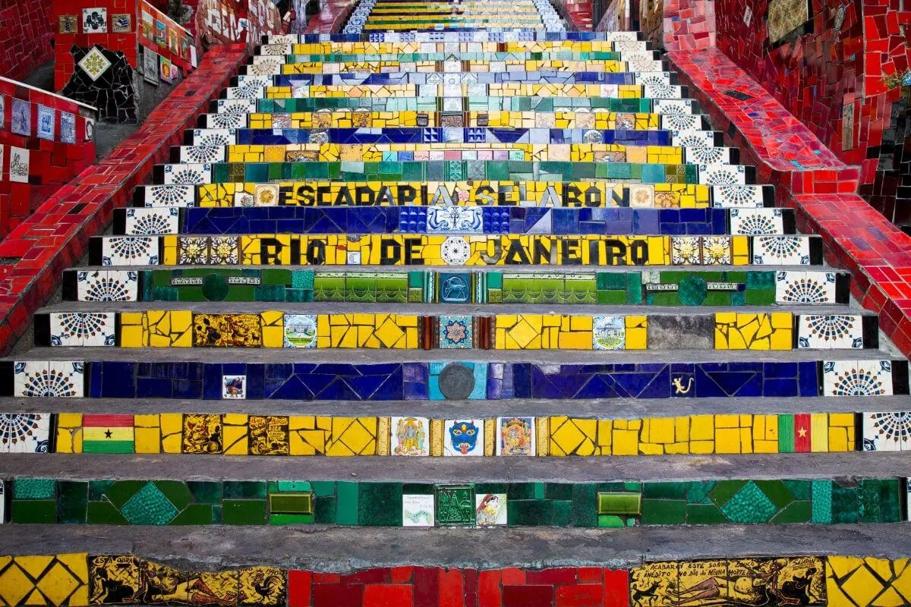

Rio de Janeiro
O Rio de Janeiro é, sem dúvida, um dos melhores destinos turísticos do Brasil e do mundo, conhecido por sua beleza natural, cultura vibrante e história rica. A cidade oferece uma infinidade de atrações para todos os gostos, desde praias famosas até monumentos históricos e uma vida noturna agitada.

QUAIS LUGARES POSSO IR?
Cristo redentor - Rio de janeiro
Localizada no topo do morro do Corcovado, a 709 metros acima do nível do mar, dentro do Parque Nacional da Tijuca.
Copacabana - Rio de Janeiro
Copacabana é um bairro situado na Zona Sul do município do Rio de Janeiro, no Brasil.
Escadaria Selarón - Santa Teresa
A Escadaria Selarón, também conhecida como Escadaria do Convento de Santa Teresa e oficialmente como Rua Manuel Carneiro, fica localizada entre os bairros de Santa Teresa e Lapa, Rio de Janeiro.
ONDE FICAR EM RIO DE JANEIRO?
Copacabana Palace (★★★★★)


Avenida Atlantica 1702, Rio de Janeiro 22021-001, Brasil.
Piscinas externas na praia, perto de Praia de Copacabana Copacabana Palace, A Belmond Hotel, Rio de Janeiro possui um spa de serviço completo onde você pode relaxar. Você também pode passar o dia tomando sol na praia e fazer uma refeição em um dos 3 restaurantes que este hotel oferece.
Clique aqui para agendar sua hospedagem!Hotel Atlantico Prime (★★★★☆)
Rua do Resende 87, Rio de Janeiro 20231-091, Brazil.
Com piscina, o Hotel Atlântico Prime está localizado no Rio de Janeiro e oferece acomodações contemporâneas. Sua localização é ideal para quem deseja descobrir as atrações da região.
Clique aqui para agendar sua hospedagem!Hotel Astoria Copacabana (★★★★☆)
Rua Republica do Peru 345 Copacabana Beach, Rio de Janeiro, Estado do Rio de Janeiro 22021-040 Brasil.
A duas quadras da mais famosa praia do Brasil, o Hotel Astória Copacabana possui uma estratégica e privilegiada localização: situa-se próximo ao Metrô Estação Cardeal Arcoverde, no mais importante centro turístico do Rio de Janeiro, cinemas, bancos, lojas, boutiques e restaurantes ao alcance de uma curta caminhada, porém, tendo como endereço uma tranqüila e arborizada rua de Copacabana.
Clique aqui para agendar sua hospedagem!RESTAURANTES
Clássico Beach Club Urca (4 estrelas)
Avenida Pasteur 520 Urca, Rio de Janeiro, Estado do Rio de Janeiro 22290-240 Brasil
Restaurante de menu internacional e variado tem terraço panorâmico e ambiente intimista com boemia familiar.
Clique aqui para saber mais!Nonna Per Heaven (4 estrelas)
Estr. de Jacarepaguá, 6069 - Jacarepaguá, Rio de Janeiro - RJ, 22753-033
A Nonna representa uma busca pela volta à essência, guiada pelo jeito certo de fazer as coisas, de dar tempo ao tempo! Por isso, a casa mescla inspirações e preparos, encontrando um equilíbrio entre o moderno e o tradicional.
Cilque aqui para saber mais!Xian (4 estrelas)
Av. Alm. Silvio de Noronha, 365 - Centro, Rio de Janeiro - RJ, 20021-010.
Saquê e pratos asiáticos modernos em um restaurante com vista para a Baía de Guanabara, terraço e lounge.
Clique aqui para saber mais!